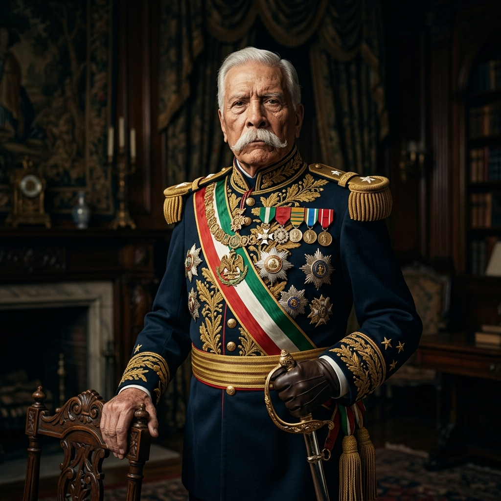
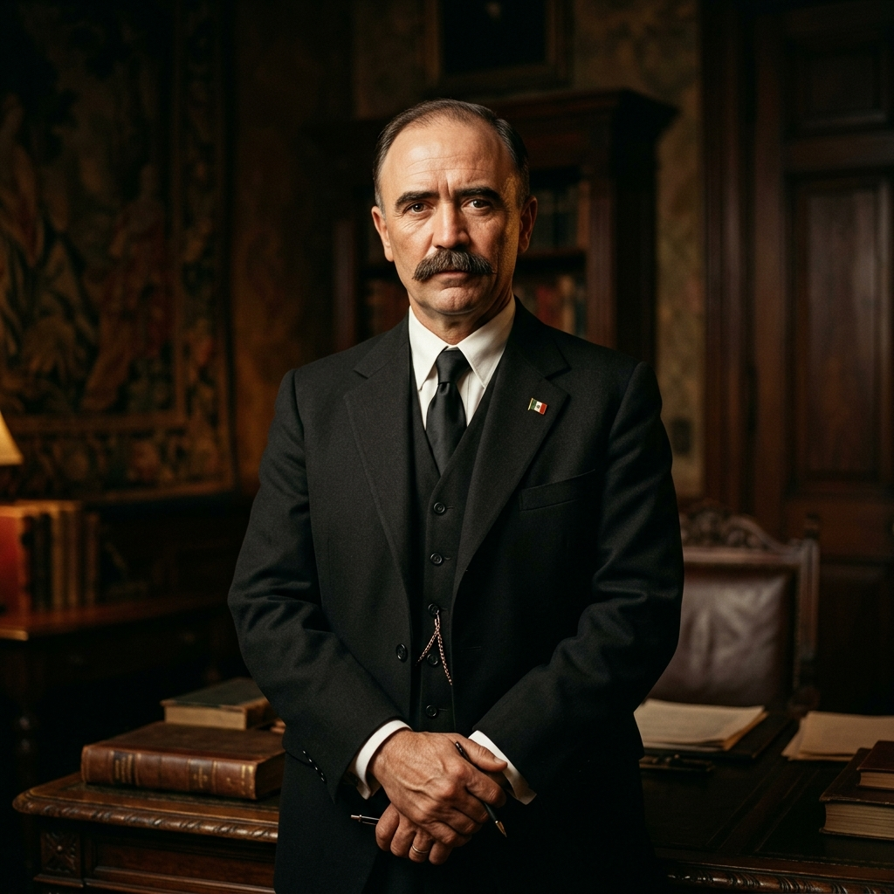
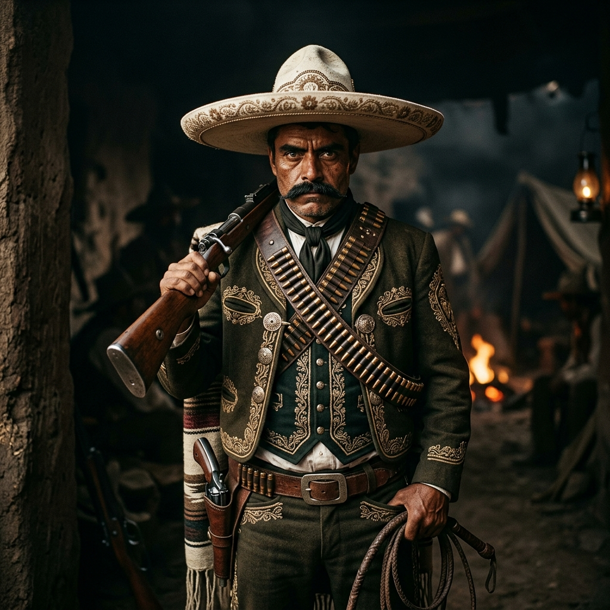
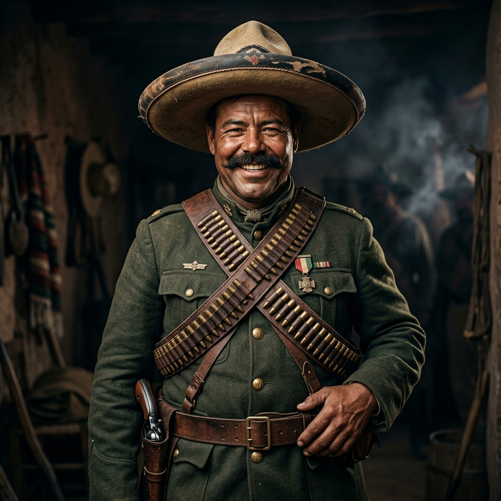

Mapa Mental
Apresentação visual (Requisito do Seminário)

1910 - 1920: A luta sangrenta por terra, liberdade e justiça que transformou uma nação.
Iniciar ApresentaçãoA Revolução Mexicana foi o primeiro grande movimento revolucionário do século XX. Suas raízes estão no Porfiriato, um longo período ditatorial de 31 anos (1876-1911) sob o comando de Porfirio Díaz.
Díaz foi um ex-general e herói militar que havia lutado contra a invasão francesa. Ironicamente, ele chegou ao poder em 1876 levantando a bandeira da "não reeleição", mas acabou se perpetuando no cargo por mais de três décadas, estabelecendo um regime autoritário baseado no lema positivista "Ordem e Progresso" (ou "pouca política e muita administração").
Durante seu governo, apoiado por uma elite de tecnocratas conhecidos como "Os Científicos", o México vivenciou enorme crescimento econômico. Ferrovias cruzaram o país e o capital estrangeiro (principalmente dos EUA e da Inglaterra) fluiu livremente. Porém, o custo humano foi devastador. As terras comunais indígenas (os ejidos) e as terras de pequenos agricultores foram brutalmente confiscadas por meio de leis abusivas (como a Lei de Terrenos Baldios) para formar gigantescas haciendas (latifúndios).
Os camponeses destituídos viraram peões em suas antigas terras, vivendo num sistema de endividamento crônico herdado de geração em geração através das "tiendas de raya" (armazéns da própria fazenda onde eram obrigados a comprar seus suprimentos através de crédito inflacionado). Nas cidades, operários sofriam com jornadas exaustivas e repressão militar violenta. A total ausência de liberdade política e a extrema miséria do povo formaram o barril de pólvora que explodiria em 1910.


Idealista Democrático
Membro de uma das famílias mais ricas do México, Madero era um intelectual liberal que se opôs à ditadura de Díaz. Em seu famoso livro "A Sucessão Presidencial em 1910", ele não pedia uma revolução social com distribuição de terras, mas sim o fim da ditadura política, cunhando o lema "Sufragio efectivo, no reelección". Após ser preso por Díaz, ele fugiu para os EUA e redigiu o Plano de San Luis Potosí, o chamado histórico às armas que iniciou a Revolução. Após chegar à presidência, por ser considerado brando demais nas reformas agrárias, perdeu o apoio popular e acabou assassinado num golpe reacionário em 1913, conhecido como a "Decena Trágica".

Líder do Exército Libertador do Sul
Nascido em Morelos, Zapata era um pequeno agricultor e domador de cavalos que se tornou a alma social da Revolução. Seu movimento era formado 100% por camponeses indígenas que exigiam a devolução imediata de suas terras roubadas pelas grandes fazendas (haciendas). Sob a bandeira incorruptível de "Tierra y Libertad", Zapata nunca buscou a cadeira presidencial. Ele rompeu com Madero e redigiu o seu manifesto definitivo: o Plano de Ayala, onde se recusava a depor as armas até que a profunda reforma agrária acontecesse. Foi assassinado em uma emboscada em 1919.

O Centauro do Norte
Nascido Doroteo Arango, Villa foi um camponês que viveu anos como fora da lei antes de abraçar a causa revolucionária. Ele se tornou o brilhante estrategista militar e comandante da División del Norte, o exército mais temível da Revolução. Villa dominou a arte de usar trens e táticas massivas de cavalaria para esmagar as forças do governo ditatorial. No norte, enquanto controlou a região, ele expropriou ricas fazendas, reduziu o preço dos alimentos para o povo e abriu dezenas de escolas. Seu carisma e rebeldia o tornaram uma lenda mundial.
Apresentação visual (Requisito do Seminário)
Análise de fonte primária (Requisito do Seminário)
"Os terrenos, montes e águas que os fazendeiros, científicos ou caciques usurparam à sombra da tirania e da justiça venal entrarão na posse destes bens a partir de já, as vilas ou cidadãos que tenham seus títulos correspondentes dessas propriedades, das quais foram despojados, mantendo a todo custo com as armas na mão a mencionada posse...
A nação está cansada de homens falsos e traidores que fazem promessas como libertadores e, ao chegar ao poder, esquecem-nas e constituem-se em tiranos."
- Emiliano Zapata
Resolução de Exercícios e Questões Dissertativas
1. Quem foi o principal líder revolucionário do sul do México, famoso por defender a reforma agrária com o lema "Terra e Liberdade"?
Qual era a situação dos camponeses no México antes da revolução, durante o governo de Porfirio Díaz?
Os camponeses viviam em condições de extrema pobreza e exploração. Suas terras ancestrais (ejidos) foram confiscadas e eles foram forçados a trabalhar como peões nas grandes fazendas (haciendas), frequentemente presos a um sistema de endividamento eterno (tiendas de raya).
Cite duas vitórias importantes que os revolucionários conseguiram e que foram escritas na Constituição de 1917.
Eles conquistaram direitos inéditos na época, como a jornada de trabalho de 8 horas e o direito à reforma agrária (a devolução das terras e a divisão de grandes fazendas).